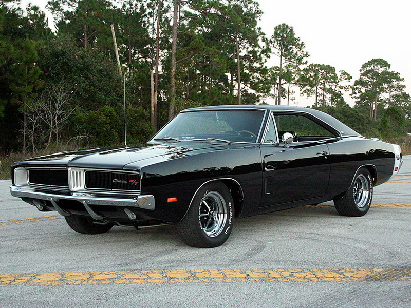

|  | |
| Источник: Wikipedia ® | |
|
Dodge Charger — автомобиль производства компании Dodge, принадлежащей концерну Chrysler Corporation. Идея по его созданию зародилась вместе с началом эпохи «мускулкаров», когда в 1964 году был выпущен Pontiac GTO, представлявший собой обычное купе, оснащённое мощным 335-сильным двигателем. Модель имела настолько большую популярность, что и остальные американские производители автомобилей решили создать подобные модели. Концепт Charger (1965 г.) на основе Dodge Coronet получил высокие отзывы, и автомобиль отправился в серию 1 января 1966 года на ежегодном Rose Bowl Game зрителям впервые был показан «Dodge Charger» — новый флагманский автомобиль компании Dodge. Главным дизайнером проекта был Карл Камерон (Carl «CAM» Cameron). Продажи начались в середине 1966 года. В 1966 году характерной чертой Charger становится решетка радиатора «electric shaver» (англ. electric shaver — электробритва) — использованы полностью скрывающиеся фары, что не использовалось Крайслером с 1942 года (на некоторых моделях подразделения DeSoto) — когда фары открыты или закрыты, решетка выглядит цельной деталью. |
|